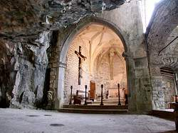

San Giovanni d'Antro
Useful Information
|  |
| Image: the cave church interiour. |
| Location: | Friuli Venezia Giulia. Near Cividale, between Pulfero and San Pietro al Natisone. From Udine follow road 54 to the northeast along the river Natisone. |
| Open: |
OCT to MAR Sun, Hol 14:30-16:30. APR to SEP Sat 15-19, Sun, Hol 11-12, 15-19. [2012] |
| Fee: |
Adults EUR 3, Children EUR 2, Seniors (65+) EUR 2. Groups (): Adults EUR 2. [2012] |
| Classification: |
|
| Light: | electric. |
| Dimension: | L=4,500m, A=348m asl |
| Guided tours: | L=200m. |
| Photography: | |
| Accessibility: | |
| Bibliography: | |
| Address: |
The Cave of San Giovanni d'Antro, 33046 Loc. Antro Pulfero (UD), Tel: +39-0432-709065. Custodian, Tel: +39-339-7435342. Pro Loco Valli del Natisone, Tel: +39-349-3241168. Grotta San Giovanni d'Antro, Natisone Gal, via Arengo della Slavia 1, 33049 San Pietro al Natisone (UD), Tel: +39-0342-717003. E-mail: |
| As far as we know this information was accurate when it was published (see years in brackets), but may have changed since then. Please check rates and details directly with the companies in question if you need more recent info. | |
| Last update: | $Date: 2015/11/20 13:19:45 $ |
History
| 10th century | the cave was used as a sanctuary. | |
| 1968 | the paths and the light were repaired. |
Description
 |
| Image: the cave portal is widened and also used as church. |
This cave is both at the same time: secluded and in a prominent location, visible from far away. When driving up Natisone valley from Udine towards Slovenia, a nice, fertile and wide valley, you once reach the southern outskirts of the Alps, the Julian Alps. The valley becomes deeper, with steep limestone cliffs on the northern side. The cave church of San Giovanni d'Antro at the foot of the cliff and visible from the valley below.
Turning off the main road to the left, a well paved but extremely steep road leads up to the small village Cividale. At the upper end of the village, behind the church is a small parking lot with a sign about the cave. A paved path leads along the mountain side to a river bed at the foot of a cliff. Signs along the path tell much about the area, the geology, biology and history of this place.
Once the visitor reaches the foot of the limestone cliff, where a steep stair leads up the the cave church. Entering the massive wooden door, the visitor is in the basement. There is a huge water tunnel crossing, the bed of the cave river, which is dry during summer. It leaves the building through a huge portal in the massive wall. Going up the stone steps we reach the cave church.
San Giovanni d'Antro, the cave church, has two huge rooms. To the left is a huge chamber, which is built into the cave entrance, with an altar towards the cave. To the right is a second nave, built in front of the cliff face by early Christians, later modifications appeared in langobardian times. The nave also shows some remains of an earlier gothic chapel.
The cave behind the church was already used by stone age man. It contains an archaic fountain, which collects dripping water from the cave formations, which was used as baptismal font since the times of the early christians.
The cave itself is open as a show cave, with electric light and a rough path. The river cave is still full of water during snow melt, but it is dry in summer. The visitor crosses water holes and rimstone pools on a footpath. There are no iron bridges or rails, bit the path is morst of the time rather level. So this cave is a really special experience, a really wild cave for a show cave, and exceptional because of the fact that you are walking through a dry riverbed.
The cave visit is self guided, the caretaker just opens the door and explains a little about the church. There are Italian explanations including some some booklets about the church, but nothing in foreign languages. This is rather exceptional for Italy, which lives on its tourists. It shows, that this place is not very often visited by tourists.
 |
| San Giovanni d'Antro Gallery |
 Search Google for "Grotta San Giovanni d'Antro"
Search Google for "Grotta San Giovanni d'Antro" Grotta di San Giovanni d'Antro
(
Grotta di San Giovanni d'Antro
({kind=link}